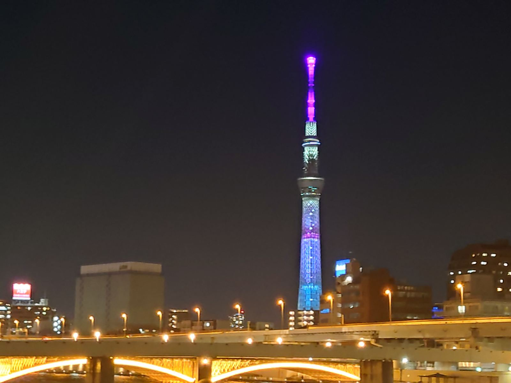
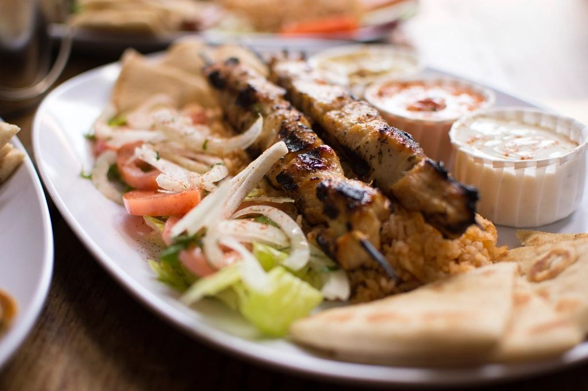
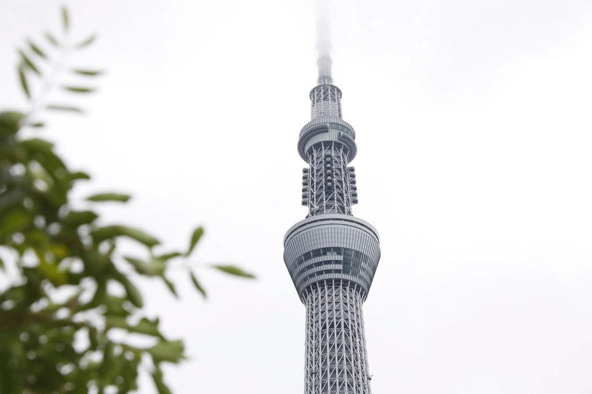
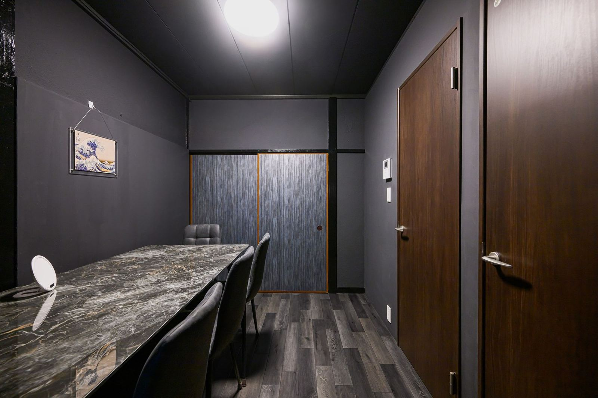
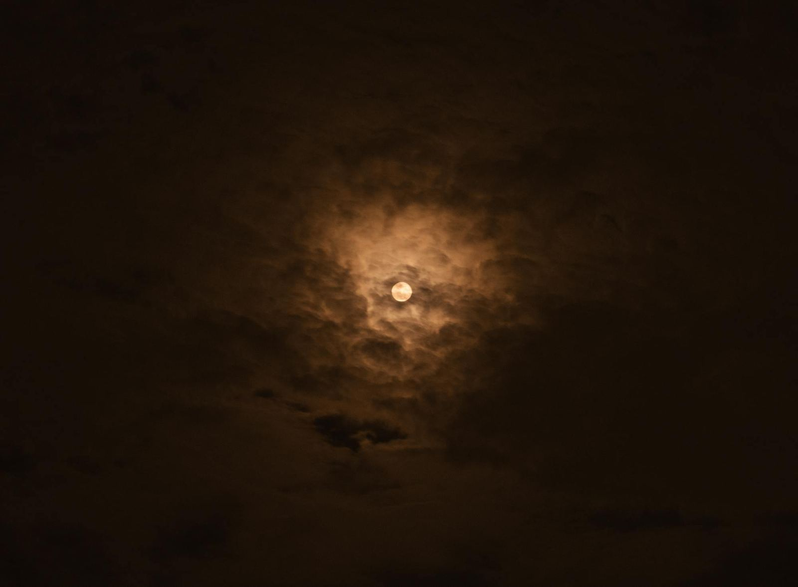

Tokyo mesra Muslim, ditulis dari jalan kami sendiri
Kami mengendalikan vila persendirian di Higashi-Mukojima, satu sudut tenang di Sumida — 15 minit dari Tokyo Skytree, 20 minit dari Asakusa. Inilah panduan yang kami berikan kepada tetamu kami sendiri: tempat makan halal, tempat solat, dan cara merancang hari-hari di antaranya. Bukan senarai restoran yang disalin — semuanya tempat yang kami jejaki sendiri.
Yang pertama dibaca tetamu kami

Restoran halal & masjid berhampiran Tokyo Skytree dan Asakusa
Restoran halal yang telah kami semak dalam lingkungan vila, masjid yang benar-benar boleh anda solat, ruang solat di dalam Skytree dan pusat beli-belah, serta tempat membeli daging dan barangan halal untuk dapur khas halal di vila. Setiap entri menyatakan dengan jelas sama ada tempat itu bersijil, milik Muslim, atau sekadar mesra Muslim.
Baca panduan →Sebelum menempah, dan setelah tiba

Empat hari di Tokyo, mesra Muslim
Kebanyakan itinerari mengabaikan dua perkara yang menentukan hari seorang pengembara Muslim: tempat solat dan apa yang boleh dimakan. Yang ini merancang kedua-duanya setiap hari, lengkap dengan masa perjalanan dari pintu vila.

Hotel atau vila persendirian? Perbandingan yang jujur
Kami mengendalikan vila, namun kami tetap berkata hotel lebih sesuai untuk sesetengah perjalanan. Perbandingan sebenar untuk keluarga dan kumpulan lima hingga sepuluh orang — kos seorang, ruang solat, makanan, dan rentak harian.
Ramadan, Raya dan bunga sakura

Ramadan di Tokyo — tarikh, iftar & waktu puasa
Ramadan pada penghujung musim sejuk Tokyo bermakna puasa kira-kira 12½ jam, antara yang terpendek yang pernah anda lalui. Jangkaan tarikh 2027, iftar dan terawih di Tokyo Camii dan Masjid Asakusa, serta sebab sahur jauh lebih mudah dengan dapur sendiri.

Sakura & Raya 2027 — Tokyo selepas Ramadan
Aidilfitri dijangka sekitar 9 Mac 2027, dan bunga sakura Tokyo mekar beberapa hari kemudian. Cara merancang perjalanan raya yang berakhir di bawah pokok sakura — termasuk lokasi tenang yang digunakan penduduk tempatan selain Ueno.
Bagaimana kami menyemak panduan ini
- Kami menyusuri laluannya sendiri. Masa perjalanan dikira dari pintu vila, bukan dari stesen ke stesen.
- Kami tidak mengaburkan istilah. Bersijil halal (dengan nama badan pensijilannya), milik Muslim, dan mesra Muslim adalah tiga perkara yang berbeza, dan setiap entri menyatakan yang mana satu.
- Kami menyemak semula setiap tiga bulan. Restoran kecil di Tokyo cepat dibuka dan ditutup, jadi setiap panduan mencatatkan tarikh semakan terakhir — dan tempat yang sudah tutup kami buang, bukan dibiarkan begitu sahaja.
- Beritahu kami jika ada perubahan. info@thehospitel.jp
Rumah tempat panduan ini ditulis
THE HOSPITEL by Dr. — vila persendirian mesra Muslim untuk sehingga 10 tetamu di Sumida, Tokyo. Dua ruang solat dengan penanda kiblat, dapur khas halal, bilik mandi bersih untuk wuduk, dan persekitaran tidur yang direka oleh seorang doktor.
Semak ketersediaan